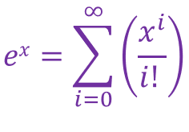

Lets say the function f(x) = f'(x):
Lets say f(x) = 1:
Since f(x) = f'(x), then f(x) ≠ 1. Now let f(x) = 1 + x:
Since f(x) = f'(x), then f(x) ≠ 1 + x. Now let f(x) = 1 + x + (x2/2!):
Since f(x) = f'(x), then f(x) ≠ 1 + x + (x2/2!). Now let f(x) = 1 + x + (x2/2!) + (x3/3!):
Since f(x) = f'(x), then f(x) ≠ 1 + x + (x2/2!) + (x3/3!). Now let f(x) = 1 + x + (x2/2!) + (x3/3!)+ (x4/4!):
You may notice a pattern here. Everytime you add a term to f(x) in the form of xn/n!, f(x) gets closer and closer to f'(x). In the above example, the sum of the first four terms of f(x) is equal to the sum of the first five terms of f'(x). You could probably guess what would happen if f(x) had another term:
The sum of the first five terms of f(x) is equal to the sum of the first five terms of f'(x). Keep in mind that f(x) is still not equal to f'(x), but the more terms we add, the closer f(x) will get to f'(x):
Now, f(x) is very very close to f'(x). Lets say f(x) has infinite terms:
As n -> ∞, f(x) -> f'(x), because as i gets bigger, the term (xi/i!) would get smaller and smaller, then there would come a point where f(x) ≈ f'(x). Since ex equal to its derivative, then we can say the ex = [f(x) with infinite terms], as in:
